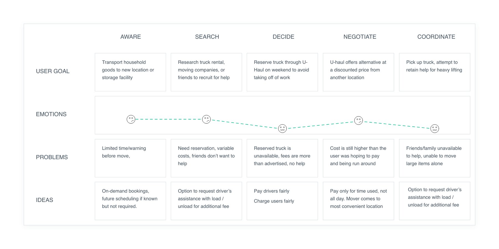
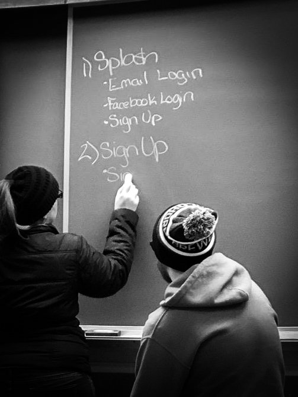
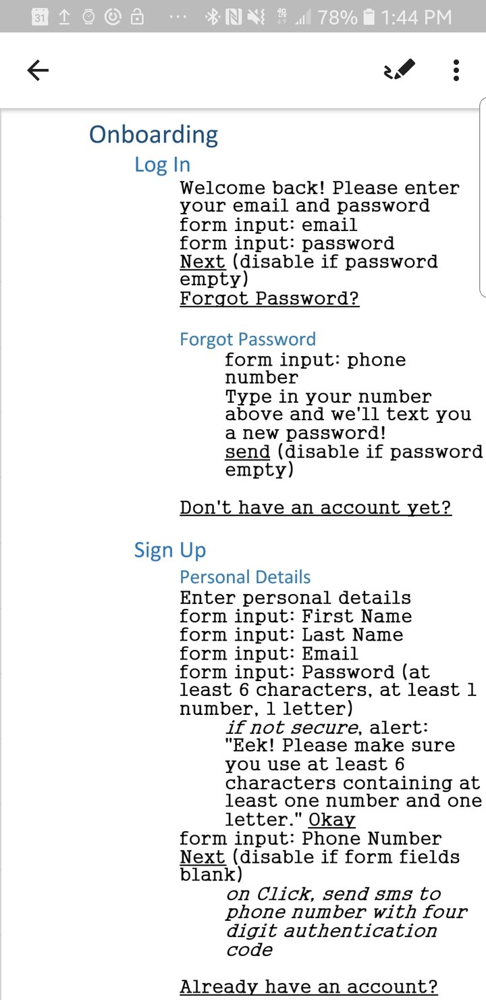
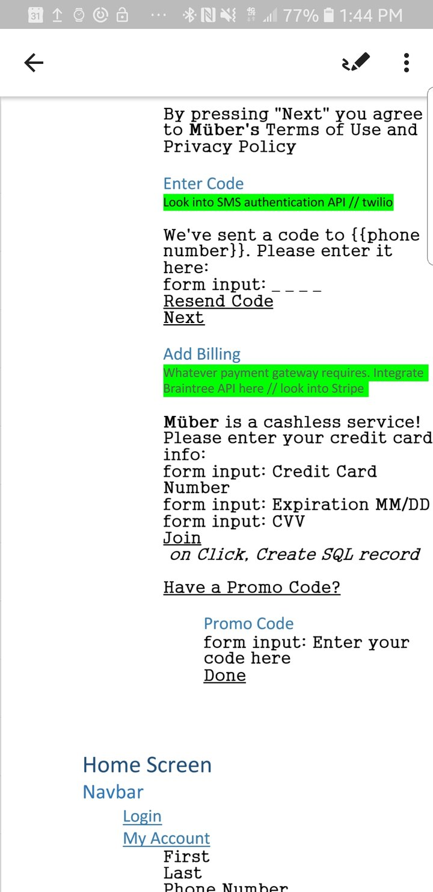
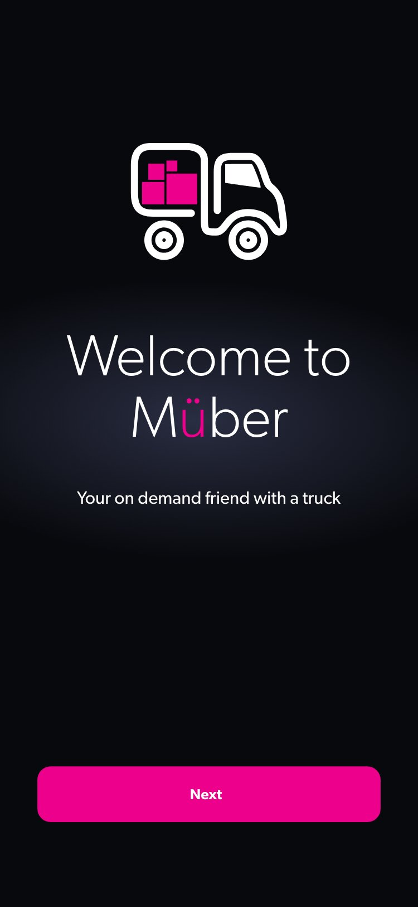
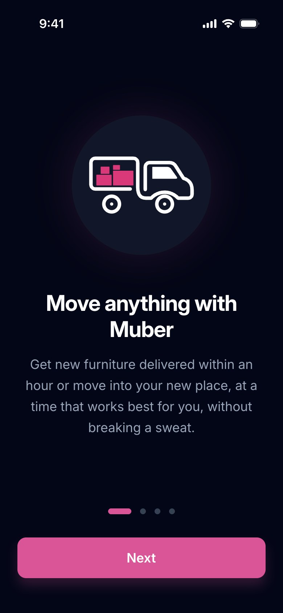

Everyone needs a friend with a truck. Not everyone has one.
Muber: an on-demand marketplace connecting people who have one big thing to move with nearby drivers who already own a truck. I founded it, and I've designed it from the first journey map to launch.
- Company
- Muber (my company, an Ohio LLC)
- Product
- Two-sided mobile marketplace: customer app, driver app, and admin tools
- My role
- Founder: research, product design, brand, product strategy, and launch planning
- Origin
- My Case Western capstone project, 2019
- Timeline
- Research and prototype 2019; company formed 2020; relaunched for market in 2025–2026
- Status
- Pre-launch, Ohio first
A capstone that refused to stay a capstone
For my Case Western capstone, I looked for a problem I could solve for people that could also be profitable. I found it in the most ordinary errand there is: getting a couch, a mattress, or a dresser from one place to another.
If you have a friend with a truck, it's an afternoon and a case of beer. If you don't, it's a truck rental reservation, a day's worth of fees for an hour's worth of work, and nobody to help you lift. Meanwhile, plenty of people already own a pickup or a box truck and would gladly earn from it.
Muber connects the two. It's built on a simple idea: community enablement over corporate extraction. The platform should make it easy for neighbors to help neighbors, and pay the people doing the work fairly.
The moving industry is built for whole houses, not one couch
Mapping a real self-move end to end showed where it breaks down.
Reservations and full-day rentals
Truck rental assumes you plan ahead and keep the truck all day. Most moves come with little warning, and many are a single item.
The quote isn't the bill
Reserved trucks turned out to be unavailable, fees came in higher than advertised, and customers felt run around.
Nobody to help lift
Friends and family weren't available or didn't want to help, and the heavy items couldn't be moved alone.
Fair to both sides of the marketplace
A marketplace only works if both sides want to come back. So every goal had a customer half and a driver half.
On demand
Book a truck now. Scheduling ahead is an option, not a requirement.
No surprise charges
See the price before you book, and pay only for what the job actually took.
Pay drivers fairly
Earn from a truck you already own, and keep 100% of your tips.
Profitable from day one
Unit economics that work in one market before expanding to the next.
How the work moved
- DiscoverJourney map of a real self-move, stage by stage
- DefineTurned each pain point into a product principle
- DesignFlow at the chalkboard, written spec, clickable prototype
- DecideMVP scope, pricing, payments, and cancellation rules
- LaunchBrand system, compliance, and Ohio launch readiness
Following one move from "I need a truck" to "now what?"
I mapped the journey of someone moving household goods with a rental truck across five stages: aware, search, decide, negotiate, and coordinate. For each, I captured what they were trying to do, how they felt, and what went wrong.
The emotional line tells the story. It never starts high, and it bottoms out twice: when the reserved truck isn't there, and on moving day, when there's nobody to help carry the heavy things.

Every pain point became a principle
The "ideas" row of the journey map is the product brief. I treated each one as a principle the product had to keep, not a feature to ship once.
On demand first
Request a truck now. Scheduling ahead is supported when you know the date, but it's never required.
Pay only for time used
The driver comes to you, and you pay for the job, not a rental period.
A truck and a pair of hands
The driver can help load and unload, so you're not left alone with a couch.
Pay drivers fairly, charge users fairly
Both sides of the price have to feel honest, or one side of the marketplace leaves.
Words first, then pixels
We worked out the onboarding flow at a chalkboard: splash, log in, sign up. Then I wrote every screen as a plain-text spec before drawing anything. That meant every field, every disabled button, every error message, and every integration note.
Writing it out forced decisions early. Phone verification by SMS code. A cashless service, so billing is part of sign-up. Friendly error copy ("Eek! Please make sure you use at least 6 characters…") instead of a red outline and a shrug.



Then the prototype
From the spec, I built a clickable prototype of the customer experience. The welcome screen sets the tone: dark, calm, one pink action, and the promise in plain words: your on-demand friend with a truck.

Prototype demo of the Muber app.
The launch app today
The app going to market keeps what worked in 2019: the truck mark, a dark screen, and one pink action. Onboarding now opens on what you can do instead of who we are: get new furniture delivered within an hour, or move into a new place at a time that works for you.

Policies are part of the experience
Taking Muber from prototype to launch meant designing the parts customers never see as screens: what's in scope, how money moves, and what happens when plans change. Each one is a UX decision with a dollar amount attached.
Launch driver-only
I cut separate helpers and a labor-only service from the first release. One driver, one truck, one job is the smallest thing that proves the marketplace. Helpers come after launch.
A range up front, never a surprise
Customers see an estimated range before booking. Their card is authorized for the top of it and charged only the final amount, so if a job finishes early, they pay less.
One charge, tip included
One authorization and one final charge per job, with the tip folded in, so customers see one line on their statement. Tip options are none, 15%, 20%, or custom, and 100% goes to the driver.
Generous to customers without burning drivers
Canceling is free until the driver is on the way, or anytime 24+ hours out. After that, fees are tiered, and 100% of every cancellation fee goes to the driver whose time it cost.
Pay drivers fairly. Charge users fairly. If either side feels cheated, the marketplace is over.
One pink thing per screen
The truck mark from the 2019 prototype stayed for launch, redrawn as clean vector artwork so it scales from a 16px favicon to a truck door. Around it, I built a production-ready brand system: logo lockups, color tokens, a type scale, UI components, and social templates.
- Pink leads, navy holds.One pink element per screen that matters. If three things are pink, nothing is.
- Dark by default.The app, site, and social lead with navy. Light mode is for documents, invoices, and print.
- Accessible on purpose.Bright pink passes contrast for buttons and large text, but not for body copy on white, so pink text uses a deeper shade.
- A voice like a friend.Easygoing, capable, and already on the way. Not a freight company, a van line, or a logistics platform.
From a journey map to a company
Muber hasn't launched yet, so there are no usage numbers to report. Here's what exists.
Research and prototype
Journey map, written spec, and a clickable prototype.
Company formed
Muber organized as an Ohio LLC.
Scoped and specified
Customer app, driver app, admin tools, pricing, payments, and dispatch.
Launching in Ohio
Ohio first, with a state-by-state compliance plan for expanding across the Midwest.
What being the founder taught the designer
Cutting is a design decision
Helpers were in the very first journey map, and cutting them from launch was hard. But a launch with fewer moving parts teaches you more, faster. The feature isn't gone. It's sequenced.
The rules are the interface
A card hold, a tip prompt, or a cancellation fee is felt as strongly as any screen. In a marketplace, those policies are where trust is won or lost, so I design them with the same care as the UI.
What's next
Launch will test what research can't: whether there are enough drivers in the first market to make "on demand" true. Proving that in Ohio comes before expanding anywhere else.
What I carry into the next one
Start with the journey, not the app. Every principle Muber launches with traces back to one map drawn in 2019. Two-sided means two users. A choice that delights customers but costs drivers isn't a good design. Write it before you draw it. A plain-text spec surfaces the hard questions while they're still cheap.